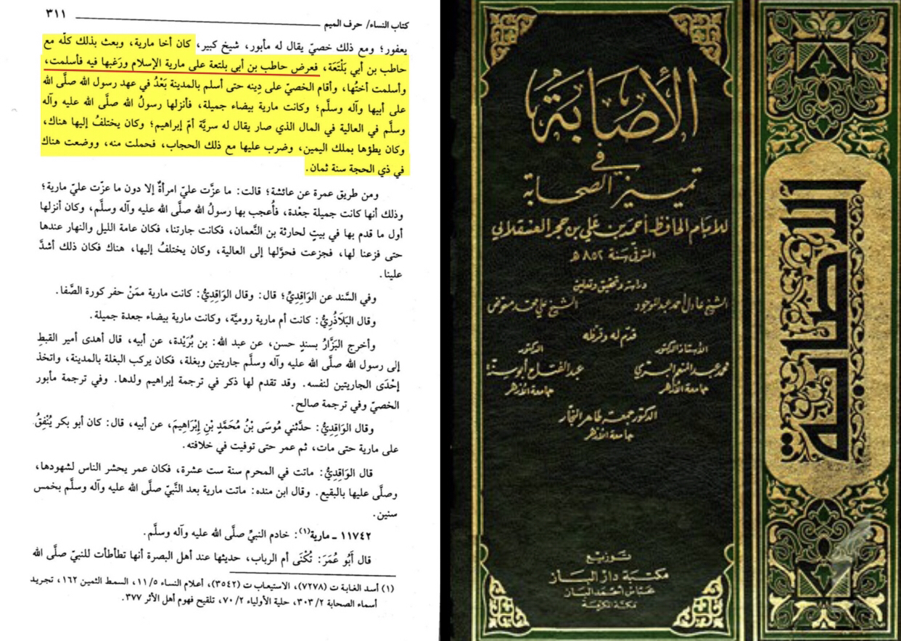

First of all for rayhana there are no authentic narrations of him marrying her. Check this link for all other details
https://www-ebnmaryam-com.translate.goog/vb/showthread.php?t=210513&_x_tr_sl=ar&_x_tr_tl=en&_x_tr_hl=en&_x_tr_pto=wapp
Now for Mariyah al-Qibtitah was she forced to Islam?
Well ibn hajar relates a story saying that the prophet of Allah (PBUH) was gifted her and he gave her the choice of Islam and she took it (Al-Isaba ibn hajar 8/311)

She was actually freed after the death of the prophet their are many evidences for that one of them being the following
Narrated 'Amir bin Al-Harith:
Allah's Messenger (ﷺ) did not leave a Dinar or a Dirham or a male or a female slave. He left only his white mule on which he used to ride, and his weapons, and a piece of land which he gave in charity for the needy travelers.
-Source: Sahih al-Bukhari 4461
Grade: Sahih (authentic) according to the conditions of Bukhari and Muslim
Ibn hajar writes in fathul bari that this was meant as mariyah al-Qibtitah that she was freed
Ibn Hazm (d. 456/1063) through a complete chain of narrators relates that:
“عن ابن عباس قال: «لما ولدت مارية إبراهيم قال رسول الله – صلى الله عليه وسلم -: أعتقها ولدها»
Ibn ‘Abbas said: When Maria gave birth to Ibrahim the Messenger of Allah (ﷺ) said, ‘Her son has set her free.’
Ibn Hazm uses this as an evidence that selling an impregnated concubine is impermissible and she becomes free after his death.”
[Ibn hazm al-Muhalla bil Athar, (Beirut: Dar al-Fekr, n.d.) Vol.7, 505 Ibn Hazm termed it ‘sahih al-sanad’]
Also
The opening verses of Sūrat al-Tahrim describe an incident in which the Prophet, peace and blessings be upon him, prohibited himself from something in order to please his wives. The classical commentators provide two opinions: one is strong and authentic, and the other is weaker and provokes controversy.
It has been authentically narrated on the authority of Aisha, may Allah be pleased with her, that the Prophet prohibited himself from drinking honey to please his wives. Aisha and Hafsa were upset that the Prophet was spending more time with his wife Zainab on account of a honey drink she would serve him, so they secretly agreed to pretend to be offended by the odor. The Prophet did not want to offend his wives, so he swore an oath never to drink it again. Allah revealed the verses telling the Prophet not to prohibit what is lawful.
Aisha reported: The Prophet, peace and blessings be upon him, would spend time with his wife Zainab bint Jahsh and he would drink a concoction of honey. Hafsa and I agreed that whomever the Prophet visited first, we would say, “I notice a strong odor of mimosa gum on you.” The Prophet visited one of them and she said this to him, so the Prophet said:
بَلْ شَرِبْتُ عَسَلًا عِنْدَ زَيْنَبَ بِنْتِ جَحْشٍ وَلَنْ أَعُودَ لَهُ
I have taken a honey drink at Zainab’s house and I will not do it again.
The verse was revealed:
لِمَ تُحَرِّمُ مَا أَحَلَّ اللَّهُ لَكَ
Why do you forbid yourself from what Allah has made lawful for you? (66:1)
Source: Ṣaḥīḥ Muslim 1474, Grade: Sahih
The authenticity of this narration is agreed upon according to Al-Bukhari and Muslim. Al-Bukhari included it in his explanation of Sūrat al-Taḥrīm. Moreover, Aisha was the direct witness about whom the verses speak, so she would know best what really happened.
An alternative explanation of the passage has been narrated by others. In this version, the Prophet prohibits himself from being intimate with his concubine wife to please his other wives. In particular, it is alleged that Hafsa became upset when the Prophet was intimate with Maria the Copt in her house and on her bed, saying:
أَيْ رَسُولَ اللَّهِ فِي بَيْتِي وَعَلَى فِرَاشِي
O Messenger of Allah, in my house and on my bed?
Source: Tafsīr al-Ṭabarī 66:1
This narration comes on the authority of Zaid ibn Aslam who was from the third generation and not a witness to the events in question. Hence, Ibn Hajar rules that this narrations’s chain of authorities is incomplete (mursal) in Fatḥ al-Bārī 9/288. For this reason, the explanation was not universally agreed upon by the classical commentators.
Al-Qurtubi mentions first the story of Aisha followed by narrations that include Maria, then he says:
أَصَحُّ هَذِهِ الْأَقْوَالِ أَوَّلُهَا وَأَضْعَفُهَا أَوْسَطُهَا
The most correct of these opinions is the first of them, and the weaker of them are the others.
Source: Tafsīr al-Qurṭubī 66:1
In other words, the authentic explanation is the one given by Aisha and the stories that include Maria are weak by comparison.
Ibn Al-Arabi concludes:
وَإِنَّمَا الصَّحِيحُ أَنَّهُ كَانَ فِي الْعَسَلِ وَأَنَّهُ شَرِبَهُ عِنْدَ زَيْنَبَ وَتَظَاهَرَتْ عَلَيْهِ عَائِشَةُ وَحَفْصَةُ فِيهِ وَجَرَى مَا جَرَى فَحَلَفَ أَلَّا يَشْرَبَهُ وَأَسَرَّ ذَلِكَ وَنَزَلَتْ الْآيَةُ فِي الْجَمِيعِ
Indeed, the only authentic narration is that it was about honey, that the Prophet drank it with Zainab, and Aisha and Hafsa pretended to be offended by it. There occurred what occurred and the Prophet made an oath never to drink it again. He confided that to his wife and the verse was revealed regarding all of them.
Source: Aḥkām al-Qur’ān 66:1
In sum, the story about the dispute between Hafsa, Maria, and the Prophet does not have a strong basis in Islam. It is part of the apocryphal traditions that are of varying and questionable degrees of authenticity. Rather, the strongest explanation of the passage, passed down by the direct witness Aisha through an unbroken chain of authorities, is that the verses were revealed about a honey drink.
Success comes from Allah, and Allah knows best.